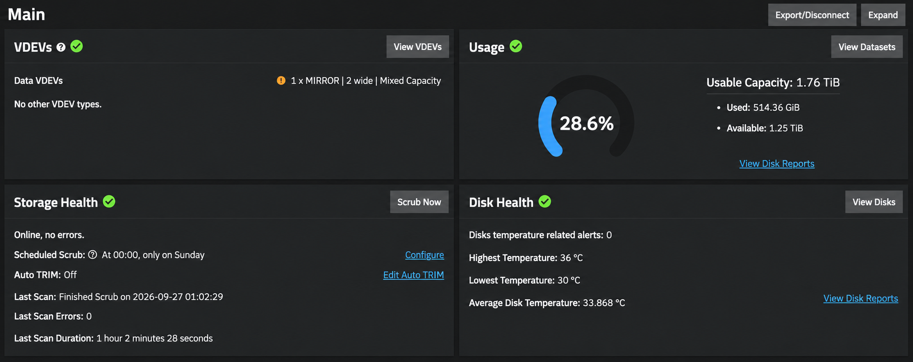
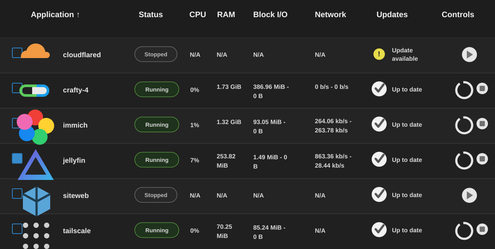
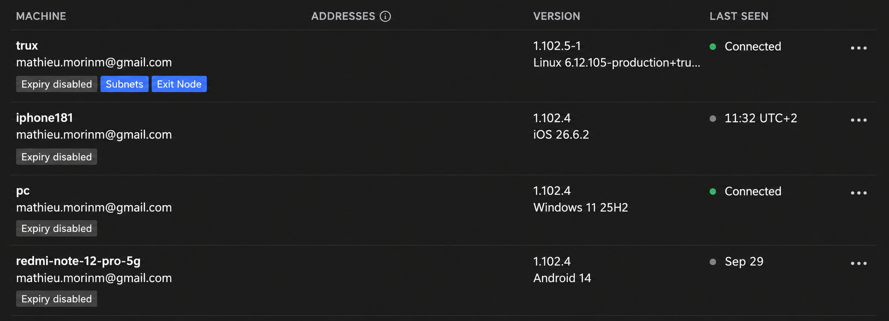
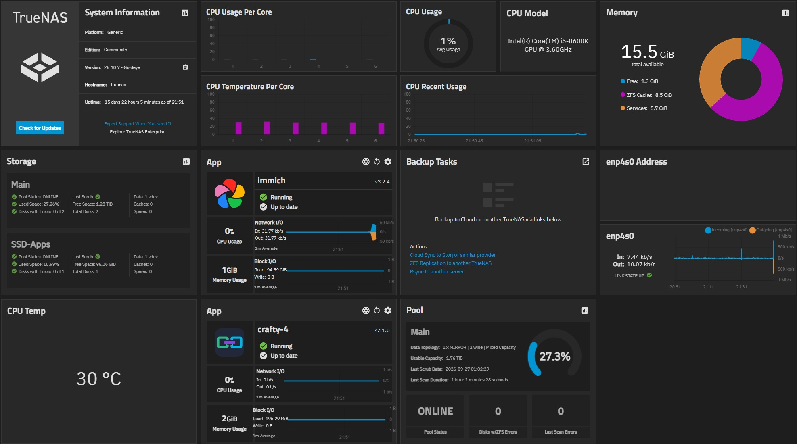

Systèmes
- Debian
- Ubuntu Server
- Windows Server
Étudiant en informatique, je m'oriente vers
le DevOps, l'administration système et l'infrastructure.
Stage disponible du 10 mai au 2 juillet 2027
En ce moment : j'administre un serveur TrueNAS et je construis des projets web en équipe [octobre 2026]
Je suis en deuxième année d'informatique à Sup de Vinci, à La Défense. Je m'intéresse au DevOps et à l'administration système : faire tourner des services fiables, comprendre le réseau et automatiser ce qui peut l'être.
J'administre un serveur personnel sous TrueNAS avec Jellyfin, un serveur Minecraft, des sites hébergés, des pools ZFS, des sauvegardes automatiques et de la supervision des disques. C'est mon terrain d'expérimentation concret pour Linux, le stockage et le réseau.
Je recherche un stage du 10 mai au 2 juillet 2027, idéalement en DevOps ou administration système, avec la possibilité de poursuivre en alternance à partir d'octobre 2027.
Stage de fin de deuxième année, avec l'objectif de poursuivre en alternance à partir d'octobre 2027.
Développement, systèmes, réseaux, cloud et cybersécurité à Sup de Vinci, La Défense.
TrueNAS, Jellyfin, serveur Minecraft, hébergement web, stockage ZFS et sauvegardes automatiques.
Algorithmique, développement web et premiers projets en équipe, du cahier des charges à la soutenance.
Des projets personnels qui montrent autant ce que je construis que la manière dont je diagnostique et fiabilise ce qui tourne dessous.
Projet personnel
J'ai conçu et j'administre un homelab basé sur TrueNAS pour centraliser mes données, héberger des services utiles et travailler sur des sujets proches d'une vraie infrastructure.
Ce projet me permet d'apprendre en continu tout en gardant un environnement fiable, sécurisé et évolutif.
Données centralisées, snapshots et sauvegardes pour garantir l'intégrité et la disponibilité.
Déploiement et administration de plusieurs services utilisés au quotidien.
Accès sécurisé à l'infrastructure depuis l'extérieur avec Tailscale et gestion des droits.
Diagnostic, dépannage et maintenance afin de conserver un environnement stable et disponible.
Ce que j'ai mis en place et ce que ce projet m'a permis d'apprendre.

Installation et configuration de TrueNAS, création du stockage ZFS et administration de l'environnement.

Déploiement et administration de plusieurs services utilisés sur mon infrastructure personnelle.

Mise en place d'un accès distant sécurisé permettant d'administrer le NAS hors du réseau local.

Surveillance de l'état de l'infrastructure, maintenance des services et résolution des incidents rencontrés.
Organisation générale de l'infrastructure, du matériel au réseau.
Machine dédiée, disques de stockage, ports SATA, alimentation et connectivité réseau vérifiés avant installation.
TrueNAS Community comme base d'administration du stockage, des datasets et des services.
Pools ZFS, datasets par usage, partages SMB, snapshots et sauvegardes.
Réseau local, exposition limitée des services, vérification des ports et accès distant sécurisé via Tailscale.
Services réellement installés ou administrés dans le homelab.
Streaming média et accès aux bibliothèques stockées sur le NAS.
En serviceGestion de photos avec données persistantes sur l'infrastructure.
OpérationnelAdministration de serveurs Minecraft, dont Vanilla et Fabric.
OpérationnelHébergement de services ou pages web sur l'environnement personnel.
DéployéExemples de troubleshooting rencontrés pendant la mise en place et l'exploitation.
Services incapables d'accéder correctement à certains datasets.
Vérification des chemins montés, utilisateurs, groupes, ACL et UID/GID.
Correction des droits applicatifs et validation des accès depuis les services concernés.
Performances réseau inférieures à ce qui était attendu.
Contrôle du lien Ethernet, des ports utilisés et de la négociation réseau.
Tests de débit et ajustements réseau avant validation du fonctionnement.
Besoin d'administrer l'infrastructure hors réseau local sans exposer inutilement l'administration.
Distinction entre services publics, services privés et interfaces d'administration.
Utilisation de Tailscale et limitation des services exposés.
Compétences concrètement mobilisées dans le projet.
Projet réalisé en groupe de 3 à l'école : une application Laravel pour créer, assigner et suivre des tâches avec priorités, pièces jointes et synchronisation calendrier.
Un tableau de bord personnel pour consulter la météo, la position et des statistiques GitHub, avec une interface en cours d'amélioration.
Un jeu en Python structuré autour d'une base de données, avec plusieurs modules et une commande de lancement documentée.
Un jeu JavaScript autour des pays et des continents, avec une interface interactive et un système de sélection.
Une application de tâches avec ajout, suppression, validation et sauvegarde locale pour conserver sa liste après actualisation.
Un tableau de bord sobre avec date du jour, tâches rapides, progression fictive et thème clair ou sombre mémorisé dans le navigateur.
Une calculatrice responsive avec affichage de l'expression, opérations courantes, contrôles CE et C, retour arrière et prise en charge du clavier.
Aucun projet dans cette catégorie pour le moment.
Une question, une piste de stage ou une opportunité en DevOps ? Écrivez-moi.